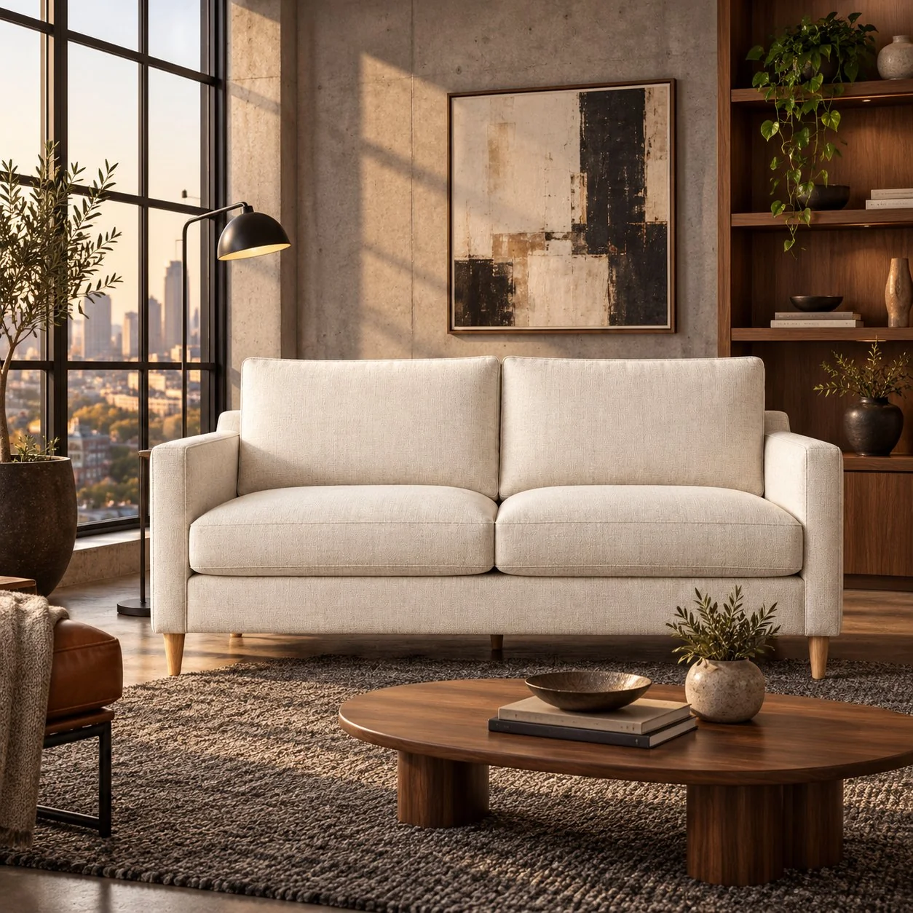
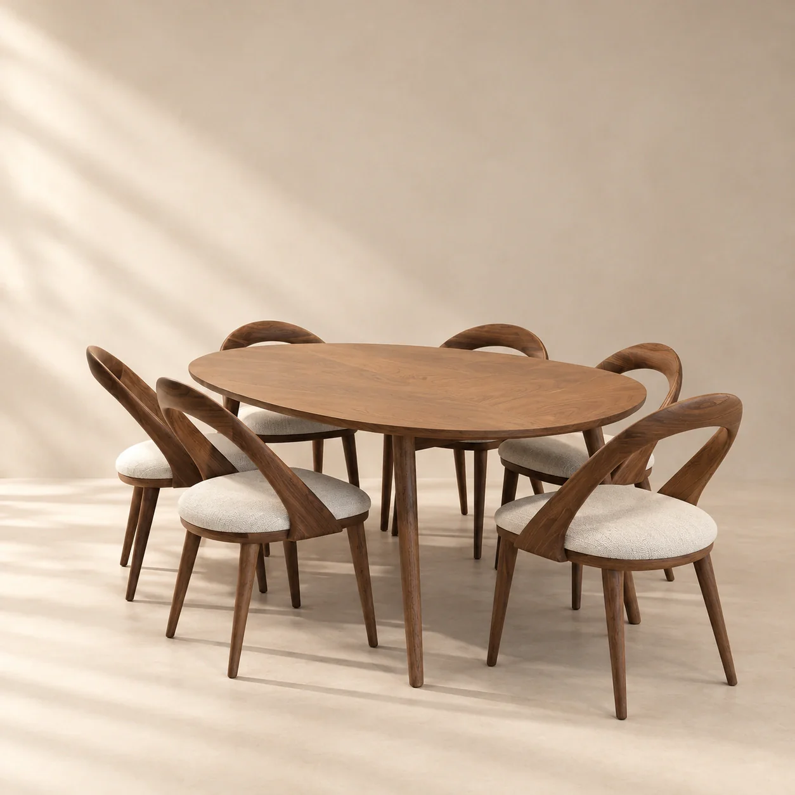
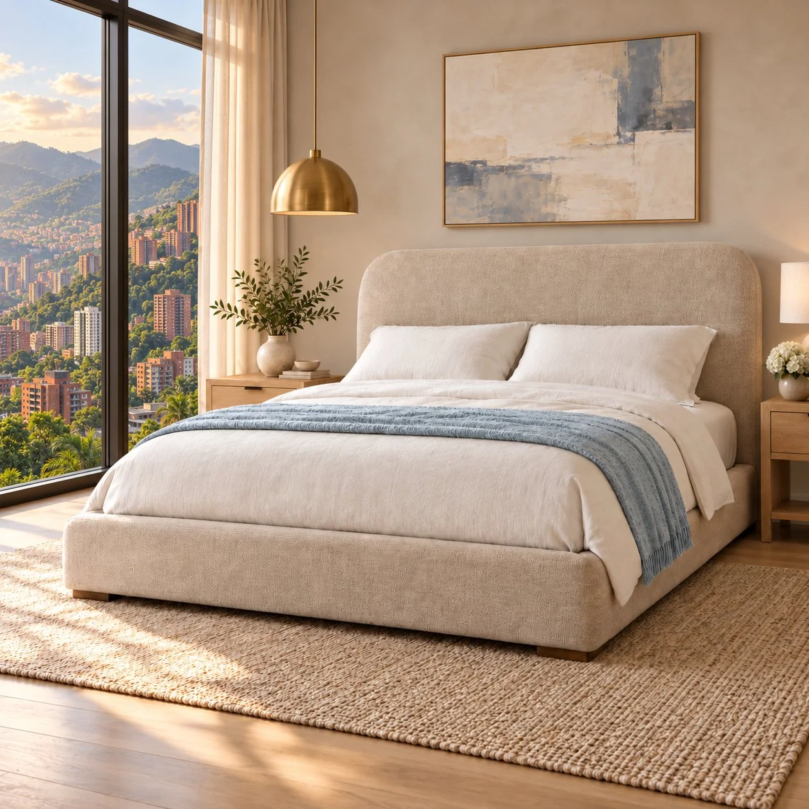
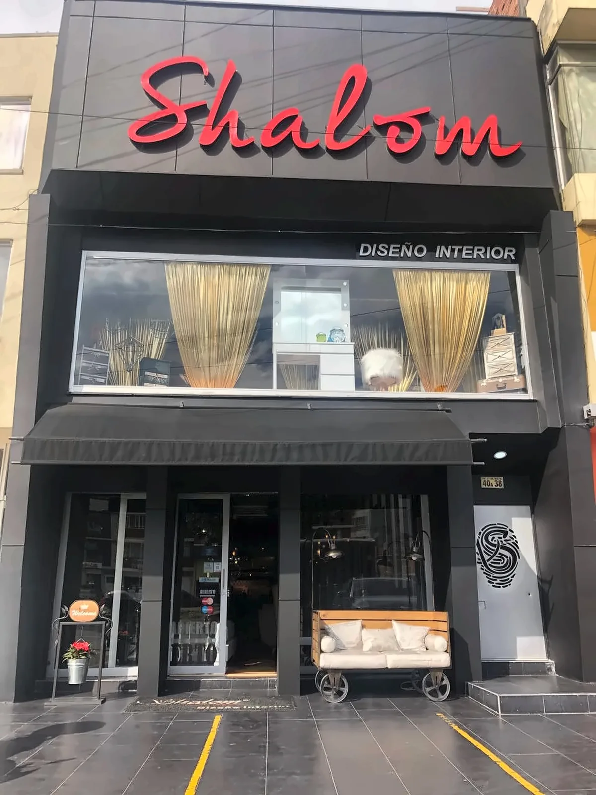

Colección destacada
Un sofá de día.
Una cama de noche.
Sofacamas de diseño, hechos en nuestra fábrica de Bogotá, que convierten tu sala en el cuarto de huéspedes que te faltaba.

Colección destacada
Sofacamas de diseño, hechos en nuestra fábrica de Bogotá, que convierten tu sala en el cuarto de huéspedes que te faltaba.

Colección destacada
Juegos de comedor, sillas y aparadores pensados para las comidas largas, las visitas y las conversaciones que se alargan.

Colección destacada
Camas, juegos de dormitorio y mesas de noche con texturas que invitan a descansar y a quedarse un rato más.
De nuestro catálogo
EXPLORAR POR CATEGORÍA
Seis colecciones, una misma forma
de sentirte en casa.
LO MÁS BUSCADO
EL DIARIO DE LA CASA
Guías de compra, telas y diseño interior para imaginar tu próximo espacio.
Guía de compra · 3 min de lectura
El sofacama adecuado debe funcionar en dos momentos distintos: cuando usas la sala y cuando necesitas una cama. Antes de decidir por una fotografía, conviene comprobar cómo encaja en tu rutina y en el espacio disponible.
1. Empieza por el uso que le vas a dar
Haz una lista sencilla: quién lo usará, con qué frecuencia se abrirá y en qué habitación estará. Un sofá para recibir visitas ocasionales y uno que se transforma cada noche plantean necesidades distintas. Esa información te ayudará a formular preguntas concretas al comparar modelos.
Diseño interior · 3 min de lectura
Una sala pequeña puede cumplir varias funciones si cada decisión parte de cómo la usas. El objetivo no es llenar los huecos: es conseguir que el sofá, la cama y el paso entre ambos funcionen sin complicaciones.
1. Dibuja la sala antes de elegir el mueble
Haz un plano con las medidas del espacio y añade puertas, ventanas y muebles que ya tienes. Dibuja el sofacama en sus dos posiciones. Cuando esté abierto, ¿se puede entrar a la habitación? ¿Queda bloqueado un armario? ¿Dónde irá la mesa de centro?

SHALOM CASA ATELIER · SINCE 1993
Shalom Casa Atelier nació en Bogotá el 23 de octubre de 1993 con una idea clara: crear muebles que respondan a las necesidades de diseño interior de cada cliente. Más de tres décadas después, esa trayectoria es la base de La Casa del Sofacama.
Empezamos escuchando lo que cada espacio y cada cliente necesitan, y esa sigue siendo la forma en que trabajamos.
Producimos en nuestra propia fábrica, que abrimos con siete colaboradores y un almacén, y que ha ampliado su capacidad de producción con los años.
Seguimos creando y transformando: desarrollamos diseños y acabados nuevos y sumamos un segundo punto de venta para llegar a más hogares.